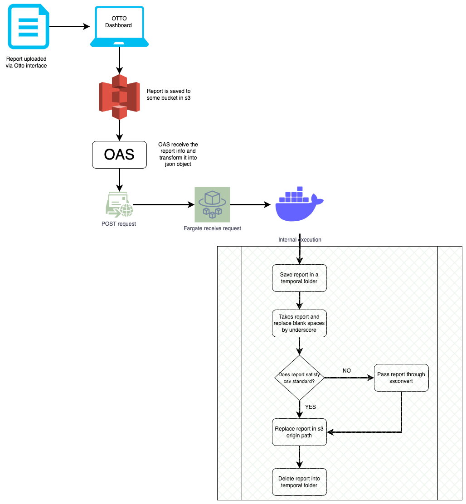

Description
Uploads module is composed of these submodules:
- Google Drive
- Upload File Manually
Each module has their own features (explained in each section) but in at general performance, all of them do the following:
- Receives reports
- Decompress gzip, zip files
- Skips non txt, csv, xls, tsv files
- Normalizes filename (replaces blank spaces by underscores)
- Fits csv, xls reports to csv standard
- Uploads reports to s3 The 2-5 steps will called "Cleaning Procedure"
Allowed extensions
Another kind of file will be discard automatically for this module
Google Drive Submodule
It receives a google drive link, downloads reports in a temporal folder to applies the Cleaning Procedure
Workflow

Input format
The input for this module consists in a json object which detemines what is upload method, it could be via Google Drive or manually, In this case, these are parameters used for Google Drive method
| Field | Description | Example |
| module | This field determines which route will be called. In this case it must to be "drive" or "google" | "drive" |
| statement_id | This is used to identify the statement run where the uploaded files will be processed. This field is optional and can be discard. | "statement_run_78" |
| drive_link | Link to google drive file/folder | "https://drive.google.com/drive/" |
| client_id | String which represents the id of each client | "client1" |
| bucket | String which contains the input bucket (where files will be uploaded) this item must to exist in your AWS account | "bucket-input" |
| path | String which contains the input path (where files will be uploaded) this item must to exist in your AWS account | "path-input" |
| file | List of files to upload. This field is required just when module = "manually", in any anotehr case, this files must to be an empty list | [] |
| on_finish | Webhook link to send final status | https://your_webhook.site/ |
Local Example
Example using python
- Set testing variables
Run server locally a) If you are using flask, run
python app.pyb) If you use Docker, run
docker run -p 5000:5000 gliderIt runs a local sever in 5000 port. If you go to http://127.0.0.1:5000 in your browser you would see the api interface
- Get any link to shared report or folder of reports. See How to get a google Drive shared link
Into tests/ create a python script following this format: test_route_uploads.py
import osimport sysimport tracebackimport requestsif __name__ == "__main__":input_data = {"module": "drive","client_id": <<client_id>>,"statement_id": <<statement_id>>, #Optional"drive_link": <<shared_gdrive_link>>,"bucket": <<s3 bucket where files will be uploaded>>,"path": <<s3 path where files will be uploaded>>,"file": ""/[],"on_finish": <<webhook.url>>}response = requests.post('http://127.0.0.1:5000/uploads', json=input_data)print(response.json())Run script
python tests/test_route_uploads.pyIf everything is ok, it returns the following:
{'date': CURRENT_DATE,'message': 'Module procedure will start immediately','module': 'uploads','status': 200}If a field is missing or it's wrong, it returns:
{'date': CURRENT_DATE,'error_in_field': ['client_id'],'error_message': 'Field required','module': 'uploads','status': 500}
Example using CURL
- Get any link to shared report or folder of reports. See How to get a google Drive shared link
- Open a terminal
- Set the input curl -X 'POST' \'http://127.0.0.1:5000/uploads' \-H 'accept: application/json' \-H 'Content-Type: application/json' \-d '{"module": "drive","client_id": <<client_id>>,"statement_id": <<statement_id>>, #Optional"drive_link": <<shared_gdrive_link>>,"bucket": <<s3 bucket where files will be uploaded>>,"path": <<s3 path where files will be uploaded>>,"file": ""/[],"on_finish": <<webhook.url>>}'
Put the input in your terminal and Enter
If everything is ok, it returns the following:
{'date': CURRENT_DATE,'message': 'Module procedure will start immediately','module': 'uploads','status': 200}If a field is missing or it's wrong, it returns:
{'date': CURRENT_DATE,'error_in_field': ['client_id'],'error_message': 'Field required','module': 'uploads','status': 500}
Example using API in Browser
Run server locally a) If you are using flask, run
python app.pyb) If you use Docker, run
docker run -p 5000:5000 glider- Go to http://127.0.0.1:5000/
- Click on "Default" text and "uploads" button

- Click on "Try it out" button

- Add the input in the text box and click on "Execute" button
AWS Routes
When infrastructure is deployed in AWS (ECS, ECR):
Repeat all steps shown previously, just change the link to server
a) For glider-staging
b) For glider-production
Upload File Manually Submodule
It receives a file uploaded since OTTITO homepage, downloads reports in a temporal folder to applies the Cleaning Procedure
Workflow

Input format
The input for this module consists in a json object which detemines what is upload method, it could be via Google Drive or manually, In this case, these are parameters used for manually method
| Field | Description | Example |
| module | This field determines which route will be called. In this case it must to be "manual" or "manually" | "manually" |
| statement_id | This is used to identify the statement run where the uploaded files will be processed. This field is optional and can be discard. | "statement_run_78" |
| drive_link | Link to google drive file/folder. As this method is manual, this files must to be a empty string | "" |
| client_id | String which represents the id of each client | "client1" |
| bucket | String which contains the input bucket (where files will be uploaded) this item must to exist in your AWS account | "bucket-input" |
| path | String which contains the input path (where files will be uploaded) this item must to exist in your AWS account | "path-input" |
| file | List of files to upload. | [file_1.csv, file_2.txt] |
| on_finish | Webhook link to send final status | https://your_webhook.site/ |
Local Example
Example using python
- Set testing variables
Run server locally a) If you are using flask, run
python app.pyb) If you use Docker, run
docker run -p 5000:5000 gliderIt runs a local sever in 5000 port. If you go to http://127.0.0.1:5000 in your browser you would see the api interface
Into tests/ create a python script following this format: test_route_manual.py
import osimport sysimport tracebackimport requestsif __name__ == "__main__":input_data = {"module": "manually","client_id": <<client_id>>,"statement_id": <<statement_id>>, #Optional"drive_link": "","bucket": <<s3 bucket where file was uploaded using otto>>,"path": <<s3 path where file was uploaded using otto>>,"file": [<<file to upload>>],"on_finish": <<webhook.url>>}response = requests.post('http://127.0.0.1:5000/uploads', json=input_data)print(response.json())Run script
python tests/test_route_manual.pyIf everything is ok, it returns the following:
{'date': CURRENT_DATE,'message': 'Module procedure will start immediately','module': 'uploads','status': 200}If a field is missing or it's wrong, it returns:
{'date': CURRENT_DATE,'error_in_field': ['client_id'],'error_message': 'Field required','module': 'uploads','status': 500}
Example using CURL
- Upload one or more valid file in AWS s3 bucket. It due this module search the files in s3 to clean and normalizate it
- Open a terminal
- Set the input curl -X 'POST' \'http://127.0.0.1:5000/uploads' \-H 'accept: application/json' \-H 'Content-Type: application/json' \-d '{"module": "manually","client_id": <<client_id>>,"statement_id": <<statement_id>>, #Optional"drive_link": "","bucket": <<s3 bucket where file was uploaded using otto>>,"path": <<s3 path where file was uploaded using otto>>,"file": [<<file to upload>>],"on_finish": <<webhook.url>>}'
Put the input in your terminal and Enter
If everything is ok, it returns the following:
{'date': CURRENT_DATE,'message': 'Module procedure will start immediately','module': 'uploads','status': 200}If a field is missing or it's wrong, it returns:
{'date': CURRENT_DATE,'error_in_field': ['client_id'],'error_message': 'Field required','module': 'uploads','status': 500}
Example using API in Browser
Run server locally a) If you are using flask, run
python app.pyb) If you use Docker, run
docker run -p 5000:5000 glider- Go to http://127.0.0.1:5000/
- Click on "Default" text and "uploads" button
- Click on "Try it out" button
- Add the input in the text box and click on "Execute" button
AWS Routes
When infrastructure is deployed in AWS (ECS, ECR):
Repeat all steps shown previously, just change the link to server
a) For glider-staging
b) For glider-production
Generated by